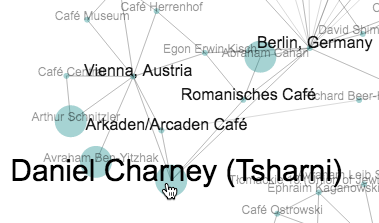

Welcome to the people as network visualization tool!
This tool lets you explore individuals (such as writers, café owners, famous community members), cafés, and cities that appear throughout the Jewish Cafés project. Here, we visualize these individuals, cafés, and cities as a network of connectionsnodes.
See more of the map by zooming with touch gestures/a scroll wheel, or clicking and dragging blank spaces to reposition the network.

Many nodes have additional content within our Scalar book, which you can explore further by the link on the right-hand side. These nodes appear as large circles.
Explore relationships between people, cafés, and cities as a network